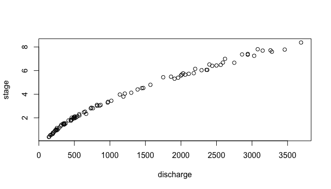
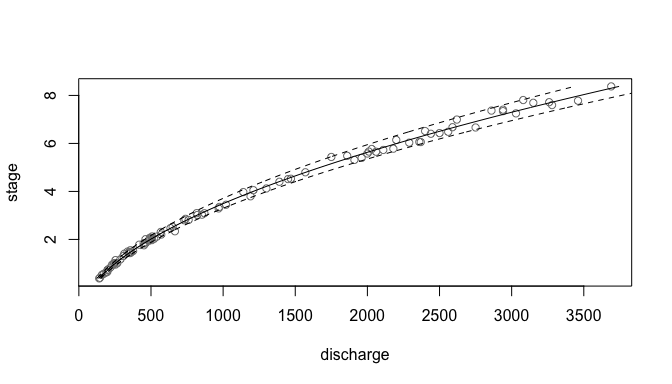
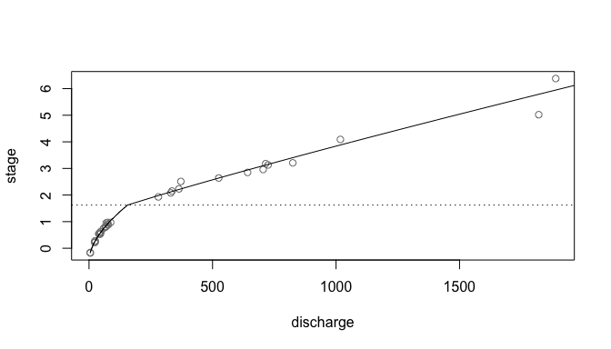

A rating curve turns a river’s stage (its water level, which is easier to record continuously) into discharge (the flow, which is not). It is fitted to gaugings: occasions when both were measured. This package fits rating curves by a range of statistical methods, and calculates uncertainty associated with them.
Installation
The package is not on CRAN yet. Get it from GitHub:
remotes::install_github("CSHS-CWRA/CSHShydRometry")A first rating curve
The package comes with 93 gaugings from the Thompson River (Water Survey of Canada station 08LF051), with stage in meters and discharge in cubic meters per second. Rating curves are drawn with stage on the vertical axis:
library(CSHShydRometry)
plot(stage ~ discharge, data = thompson)
The classic rating curve is a power law, , relating discharge to stage , where is the offset: the stage at which the flow would stop. rc_powerlaw() fits it by least squares. These gaugings scatter more at higher flows, so we let the standard deviation of the scatter grow in proportion to the flow, with variance = "prop":
fit <- rc_powerlaw(discharge, stage, data = thompson, variance = "prop")
coef(fit)
#> a b c
#> 52.487716 1.879973 -1.303340Confidence and prediction limits
predict() evaluates the curve at the stages you give it. Ask for a confidence level to get limits for the curve itself, and a prediction level to get limits for a new gauging:
predict(fit, new_stage = c(1, 3, 6), conflev = 0.95, predlev = 0.95)
#> # A tibble: 3 × 6
#> stage fit ci_lwr ci_upr pi_lwr pi_upr
#> <dbl> <dbl> <dbl> <dbl> <dbl> <dbl>
#> 1 1 252. 249. 255. 232. 272.
#> 2 3 816. 806. 826. 750. 882.
#> 3 6 2205. 2178. 2232. 2027. 2383.Leave out new_stage to cover the range of the gaugings, which is handy for plotting:
band <- predict(fit, conflev = 0.95, predlev = 0.95)
plot(stage ~ discharge, data = thompson, col = "grey50")
lines(stage ~ fit, data = band)
lines(stage ~ pi_lwr, data = band, lty = 2)
lines(stage ~ pi_upr, data = band, lty = 2)
The dashed lines are the 95% prediction limits. The confidence limits, in ci_lwr and ci_upr, sit almost on the curve at this scale, and are not shown.
Other models
Every model has an rc_*() function, and swapping one for another changes one line:
-
rc_powerlaw(): a power law, fitted on the original scale. -
rc_powerlaw_log(): a power law, fitted on the log-log scale. -
rc_poly(),rc_loess(): a polynomial, or a smooth curve. -
rc_2seg_powerlaw(): two power laws joined at a breakpoint (below).
predict() gives back the same columns for every model, so results from different models line up:
fit_poly <- rc_poly(
discharge,
stage,
data = thompson,
variance = "prop"
)
predict(fit, new_stage = 3, conflev = 0.95)
#> # A tibble: 1 × 4
#> stage fit ci_lwr ci_upr
#> <dbl> <dbl> <dbl> <dbl>
#> 1 3 816. 806. 826.
predict(fit_poly, new_stage = 3, conflev = 0.95)
#> # A tibble: 1 × 4
#> stage fit ci_lwr ci_upr
#> <dbl> <dbl> <dbl> <dbl>
#> 1 3 812. 802. 821.Two-segment curves
Where the river’s control changes, say when the water rises out of the channel onto a floodplain, one power law is not enough. rc_2seg_powerlaw() fits two power laws that meet at a breakpoint stage, estimated along with them. The Ardèche at Sauze, from the RBaM package, is such a river; each of its gaugings comes with a reported standard uncertainty, which gives its variance:
sauze <- tibble::tibble(
stage = RBaM::SauzeGaugings$H,
discharge = RBaM::SauzeGaugings$Q,
uncertainty_sd = RBaM::SauzeGaugings$uQ
)
fit2 <- rc_2seg_powerlaw(
discharge, stage,
data = sauze,
variance = var_spec(sauze$uncertainty_sd^2)
)
plot(stage ~ discharge, data = sauze, col = "grey50")
lines(stage ~ fit, data = predict(fit2))
abline(h = fit2$curve_parameters$k, lty = 3)
The dotted line marks the estimated breakpoint. The curve has a corner there, so for limits near it, use predict(fit2, conflev = 0.95, method = "boot"): the default delta method is fast, but unreliable at the corner.
Learn more
The package website has the full reference and the vignettes:
-
vignette("fitting"): choosing gaugings, looking at their scatter, and every way the package fits a curve. -
vignette("uncertainty"): confidence and prediction limits, what they assume, and where they mislead.
Related software
Most agencies build ratings in commercial hydrometric data systems: AQUARIUS Time-Series (Aquatic Informatics), used by the Water Survey of Canada and the USGS, and WISKI and Hydstra (KISTERS). They manage the whole workflow, from gaugings to published discharge, but are proprietary.
Open-source tools for fitting rating curves are mostly Bayesian:
| Software | Language | Approach |
|---|---|---|
| BaRatin / BaRatinAGE (INRAE) | Fortran, with a graphical interface | Bayesian; priors from the hydraulic controls; multi-segment curves through a configuration matrix |
| RBaM (INRAE) | R | R interface to BaM, the engine behind BaRatin |
| bdrc | R | Bayesian hierarchical power law and generalized power law, with constant or varying scatter |
| ratingcurve (USGS, provisional) | Python | Bayesian segmented power law, with PyMC |
CSHShydRometry instead fits by least squares, with no priors to specify. Its limits come from the delta method or a bootstrap, and it has explicit schemes for how the scatter changes with the flow. That makes it quick to use, and a classical reference against which to compare the Bayesian methods. Beware that notation differs between tools: BaRatin, for example, writes the power law as , swapping the roles of and used here. For a comparison of methods for rating-curve uncertainty, see Kiang et al. (2018), “A comparison of methods for streamflow uncertainty estimation”, Water Resources Research, doi:10.1029/2018WR022708.
Citation
To cite CSHShydRometry in publications, please use the following (which citation("CSHShydRometry") also prints):
Coia V, Moore RD, Whitfield P (2026). CSHShydRometry: Statistical Methods for Rating Curves. R package version 0.0.1.9000, https://cshs-cwra.github.io/CSHShydRometry/.
As BibTeX:
Acknowledgements
The name of this R package is in recognition of the support provided by the Canadian Society for Hydrological Sciences (CSHS), which is an affiliated society of the Canadian Water Resources Association (CWRA).
Contributing
Contributions are welcome; see CONTRIBUTING.md. Please note that this project is released with a Contributor Code of Conduct. By participating in this project you agree to abide by its terms.